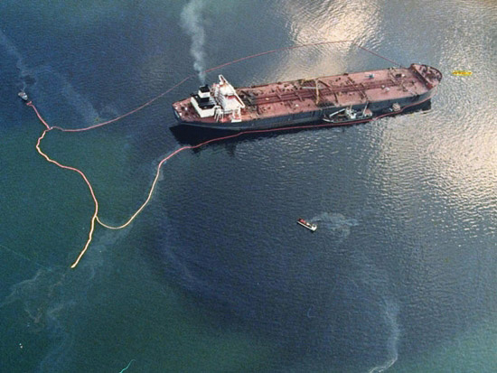

In the United States, the slow pace of government action on environmental protection during the 1980s began to change with the Superfund reauthorization in 1986. The following year, Congress overrode President Reagan’s veto to amend the Clean Water Act to control nonpoint sources of pollution such as fertilizer runoff.Philip Shabecoff, A Fierce Green Fire: The American Environmental Movement (New York: Hill & Wang, 1993), 230. As America’s economy continued to expand during the 1980s, so did its solid waste problem. The issues of America’s bulging landfills and throwaway economy were captured by the image of the Mobro 4000, a barge carrying 3,168 tons of trash that set sail from Islip, Long Island, New York, on March 22, 1987.William Rathje and Cullen Murphy, Rubbish! (New York: Harper Perennial, 1992), 28. The barge spent the next fifty-five days in search of a suitable location to deposit its cargo while drawing significant media attention.Philip Shabecoff, A Fierce Green Fire: The American Environmental Movement (New York: Hill & Wang, 1993), 271. Meanwhile, New York City’s Fresh Kills Landfill became the largest landfill in the world. The following summer, the issue of waste returned to the headlines when garbage and medical waste, including hypodermic needles, began washing onto beaches in New York and New Jersey, costing coastal counties in New Jersey an estimated $100 million in tourist revenue. Public outcry spurred the federal government to ban ocean dumping of municipal waste. The states of New York and New Jersey subsequently closed several coastal sewage treatment plants, upgraded others, and enacted laws for medical waste disposal.Andrew J. Hoffman, From Heresy to Dogma: An Institutional History of Corporate Environmentalism (San Francisco: New Lexington Press, 1997), 120–21.
America’s reliance on fossil fuels was brought to the forefront once again when the Exxon Valdez supertanker ran aground in Prince William Sound, Alaska, on March 24, 1989. Over 10 million gallons of crude oil spilled from the ship, polluting 1,200 miles of coastline. Approximately 350,000 sea birds, several thousand rare otters, and countless other animals were killed. In 2010, lasting damage from the spill was still documented. The accident coincided with and helped to further a generational peak in environmental awareness.
Figure 1.7 Exxon Valdez Leaking Oil into Prince William Sound
Source: NOAA, [0]“Exxon Valdez Oil Spill 20 Years Later: An NOS Scientist’s Perspective,” NOAA World, March 24, 2009, accessed March 16, 2011, http://www.noaaworld .noaa.gov/scitech/apr2009_scitech_2.html.
Legal judgments against Exxon exceeded $5 billion, and the incident single-handedly led to the enactment of the Ocean Pollution Act of 1990, which mandated safety measures on ocean crude oil transport.Andrew J. Hoffman, From Heresy to Dogma: An Institutional History of Corporate Environmentalism (San Francisco: New Lexington Press, 1997), 121–22. By the early 1990s, the chemical and energy industries were becoming increasingly proactive on environmental matters, looking beyond regulatory compliance toward crafting a specific environmental management strategy. The nature of government regulation began to change as well, with increasing emphasis on goals rather than technology-forcing to achieve those goals (e.g., the Clean Air Act Amendments of 1990). This allowed industry more flexibility in selecting approaches to emissions reductions that made financial sense.
Improved regulatory design focused on goals and results rather than means and proscribed technical fixes, representing what many viewed as a positive policy strategy evolution. This adaptation by government occurred in part as a response to industry resistance to government imposition of “command and control” requirements. Often neglected in polarized discussions that simplistically frame business against government is the fact that governments are steadily adjusting, updating, and refining regulatory approaches to better reflect new knowledge, technology, and business realities. It should be kept in mind that the history of environmental and sustainability issues in business is an evolutionary process of constantly interacting and interdependent cross-sector participants that may collide but ultimately adapt and change. Just as the regulatory bodies have had to adapt to changing and emerging resource, waste stream, Earth system, and health problems, so too have environmental groups and companies had to acknowledge a novel cascade of problems associated with industrial production. Shifting, give-and-take, back-and-forth dynamics characterized the terrain even as new participants emerged. Examples of this evolution were the rising numbers of health, equity, energy, and environmental nongovernmental activist organizations, many of which had lost faith in governments’ capacities to solve problems. However, pressures on government by such groups might cause a regulatory response that creates an unintended new pollution problem. For example, does a focus on reducing large particulate matter in the air from vehicle emissions drive higher emissions of microsized particles that create a new set of medical challenges and respiratory afflictions? In addition, the environmental community is not monolithic. These organizations range from law-defying extreme activists attacking corporations to pragmatic, collaborative science-based nongovernmental organizations (NGOs) working closely with companies to generate solutions. Despite this rich evolutionary adaptive phenomenon across sectors, for the most part companies remained relatively resistant to environmental groups through the 1990s.
Compliance was still the primary goal, and companies combining forces to set industry standards became a method of forestalling regulation. Unless they were singled out due to their industry’s visibility or poor reputation, most companies continued to see health and environmental issues as a burden and additional cost. Environmentalism was associated with tree-huggers, altruists, overhead cost burdens, and public sector fines and regulation.
As if on a parallel yet nonintersecting path, in 1989, a special issue of the Scientific American journal articulated the state of scientific understanding of the growing global collision and the urgency of addressing the clashes among human economic growth patterns, ecological limits, and population growth. For the first time, the need to address dominant policies and economic growth models was being raised in a leading US scientific journal.
In fact, debate on scientific evidence and necessary global action was expanding to challenge the one-dimensional view held by most corporate leaders. With the rise in environmental problems at the global scale, the United Nations (UN) convened a conference on the environment in Rio de Janeiro in June of 1992, which became known as the Rio Earth SummitA United Nations conference on the environment held in Rio de Janeiro in June 1992. More than 100 heads of state, representatives from 178 nations, and 18,000 people from 7,000 nongovernmental organizations attended this unprecedented forum. Major results included a nonbinding charter for guiding environmental policies toward sustainable development, a nonbinding agreement on forestry management and protection, the establishment of the UN Commission on Sustainable Development, and conventions on climate change and biodiversity that have not yet been ratified by enough nations to go into effect.. Attending this unprecedented forum were more than 100 heads of state, representatives from 178 nations, and 18,000 people from 7,000 NGOs. Major results included a nonbinding charter for guiding environmental policies toward sustainable development, a nonbinding agreement on forestry management and protection, the establishment of the UN Commission on Sustainable Development, and conventions on climate change and biodiversity that have not yet been ratified by enough nations to go into effect. Despite the lack of binding treaties, the Rio Earth Summit succeeded in articulating general global environmental principles and guidelines in a consensus-driven setting involving participation by most of the world’s nations.Tyler Miller Jr., Living in the Environment: Principles, Connections, and Solutions, 9th ed. (Belmont, CA: Wadsworth, 1996), 706.
While there may have been less activity in the United States at the time, a new era was under way internationally. Creation of the World Business Council for Sustainable Development (WBCSD) marked a turning point in global business engagement. In preparation for the Rio Earth Summit, Swiss industrialist Stephan Schmidheiny organized the WBCSD in 1990. The council featured over fifty business leaders from around the world. Their task was without precedent, as Schmidheiny explained: “This is the first time that an important group of business leaders has looked at these environmental issues from a global perspective and reached major agreements on the need for an integrated approach in confronting the challenges of economic development and the environment.”Stephan Schmidheiny, with the Business Council for Sustainable Development, Changing Course (Cambridge, MA: MIT Press, 1992), xxi.
The WBCSD published a book in 1992 titled Changing Course, in which the objectives of business and the environment were argued to be compatible. Schmidheiny wrote that business must “devise strategies to maximize added value while minimizing resource and energy use,” and that “given the large technological and productive capacity of business, any progress toward sustainable development requires its active leadership.”Stephan Schmidheiny, with the Business Council for Sustainable Development, Changing Course (Cambridge, MA: MIT Press, 1992), 9. This language represented a mainstreaming of what is called eco-efficiencyA conceptual framework that seeks to reduce the amount of material and energy needed to manufacture and use products over the product life cycle, thus minimizing waste and costs while boosting profits. in business. The WBCSD opened new doors. Its work signaled acceptance of the new term sustainable business and hinted at sustainability as a term that referred to an alternative economic growth pattern. Sustainable business, defined as improving the efficiency of resource use, was beginning to be recognized by global business leaders as an activity in which corporations could legitimately engage. The important shift under way was that the notion of sustainability was moving from small pockets of visionary business leaders and development specialists to the broader international business community.
It made sense. World population growth trajectories predicted emerging economies growing at an accelerating rate. Their societies’ legitimate aspirations to live according to Western developed economies’ standards would require a tremendous acceleration in the throughput of raw materials, massive growth in industrial activity, and unprecedented demand for energy. People were beginning to wonder how that growth would be achieved in a way that preserved ecological systems, protected human health, and supported stable, viable communities. Figure 1.8 "Actual and Predicted Global Population Growth, 1750–2050 (billions)" shows the significant increases in emerging economy populations compared to developed countries after 1950.
Figure 1.8 Actual and Predicted Global Population Growth, 1750–2050 (billions)

Source: UNEP/GRID-Arendal, “Trends in Population, Developed and Developing Countries, 1750–2050 (Estimates and Projections).” UNEP/GRID-Arendal Maps and Graphics Library, accessed March 14, 2011, http://maps.grida.no/go/graphic/trends-in-population-developed-and-developing-countries-1750-2050-estimates-and-projections.
Of no small significance, certain publications emerged and within a few years were read widely by those interested in the debates over economic growth and population trajectories. In 1993, Paul Hawken authored The Ecology of Commerce, which brought to the public’s attention an alternative model of commerce without waste that relies on renewable energy sources, eliminates toxins, and thrives on biodiversity. Hawken moved beyond the WBCSD goals of minimization (eco-efficiency) by suggesting a restorative economy “that is so intelligently designed and constructed that it mimics nature at every step, a symbiosis of company and customer and ecology.”Paul Hawken, The Ecology of Commerce (New York: Harper Business, 1993), 12, 15. Written for a broad audience, Hawken’s book became a must-read for those trying to grasp the tensions among economic growth, the viability of natural systems, and the possibilities for change. An entrepreneur himself, Hawken looked to markets, firms, and an entrepreneurial mind-set to solve many of the problems.
In 1991, strategy thinker and Harvard Business School professor Michael Porter published articles about green strategy in Scientific American, and in 1995 his article with Claas van der Linde called “Green and Competitive: Ending the Stalemate” appeared in the Harvard Business Review.Michael E. Porter and Claas van der Linde, “Green and Competitive: Ending the Stalemate,” Harvard Business Review 73, no. 5 (September/October 1995): 120–34. Publication in a top business journal read by executives was important because it sent a strong signal to business that new ideas were emerging, in other words, that integrating environmental and health concerns into strategy could enhance a company’s competitive position. Business-executive-turned-educator Robert Frosch had already published his ideas about recovering waste materials in closed-loop systems in “Closing the Loop on Waste Materials.”Robert A. Frosch, “Closing the Loop on Waste Materials,” in The Industrial Green Game (Washington, DC: National Academy Press, 1997), 37–47. For a former executive of a major corporation to talk about recovering and using waste streams as assets and inputs for other production processes represented a breakthrough. Earlier classics such as Garrett Hardin’s “The Tragedy of the Commons” and Kenneth Boulding’s “The Economics of the Coming Spaceship Earth” continued to serve as foundations for new thinking about the contours of future business growth.Garrett Hardin, “The Tragedy of the Commons,” Science 16 (1968): 1243–48; Kenneth Boulding, “The Economics of the Coming Spaceship Earth” (paper presented at the Sixth Resources for the Future Forum on Environmental Quality in a Growing Economy, Washington, DC, March 8, 1966). A body of research and new reasoning was accumulating and diffusing, driving change in how people thought.
Even as the relationship among conventional business perspectives and environmental, health, and social issues shifted, albeit slowly, global problems continued to mount. Climate change debate moved from exclusively scientific conversations to mainstream media outlets. In the summer of 1988, an unprecedented heat wave attacked the United States, killing livestock by the thousands and wiping out a third of the country’s grain crop. The issue of global warming or, more appropriately, global climate change entered the headlines with new force.Kirkpatrick Sale, The Green Revolution: The American Environmental Movement, 1962–1992 (New York: Hill & Wang, 1993), 71. During the heat wave, Dr. James E. Hansen of the National Aeronautics and Space Administration (NASA) warned a Senate committee that the greenhouse effect—the process by which excessive levels of various gases in the atmosphere cause changes in the world’s climate—had probably already arrived.Philip Shabecoff, A Fierce Green Fire: The American Environmental Movement (New York: Hill & Wang, 1993), 196. The United Nations and the World Meteorological Organization established the Intergovernmental Panel on Climate Change (IPCC) in 1988 to study climate change. With input from over nine hundred scientists, the IPCC published its first report in 1995, which concluded that by the year 2100, temperatures could increase from 2°F to 6°F, causing seas to rise from 6 to 38 inches with changes in drought and flooding frequency. Citing a 30 percent rise in atmospheric carbon dioxide since the dawn of the Industrial Age, the IPCC reported that “the balance of evidence suggests a discernable human influence on global climate.” Twenty-four hundred scientists endorsed these findings.Paul Raeburn, “Global Warming: Is There Still Room for Doubt?” BusinessWeek, November 3, 1997, 158.
http://environment.nationalgeographic.com/environment/global-warming/extreme-ice-survey-article.html
Figure 1.9 Retreating Montana Glacier
Upper picture taken 1913; bottom picture taken 2008
Source: US Geological Survey, “Sperry Glacier Panoramic 1913–2008,” June 2010, accessed March 16, 2011, http://www.nrmsc.usgs.gov/repeatphoto/sperry-f.htm.
As with the issue of ozone depletion, an international conference was convened in December 1997 in Kyoto, Japan, to address the problem of global climate change. Representatives from over 160 nations hammered out an agreement known as the Kyoto ProtocolThe Kyoto Protocol to the United Nations Framework Convention on Climate Change (UNFCCC) is an agreement hammered out by over 160 nations during an international conference in December 1997 in Kyoto, Japan, to address the problem of global climate change. The protocol required developed nations to reduce their emissions of greenhouse gases by an average of 5.2 percent below 1990 levels by 2012. The United States declined to abide by the protocol. to the United Nations Framework Convention on Climate Change (UNFCCC). The protocol, seen as a first step in addressing climate change issues, required developed nations to reduce their emissions of greenhouse gases by an average of 5.2 percent below 1990 levels by the years 2008 to 2012. Regulated greenhouse gases included carbon dioxide, nitrogen oxides, methane, hydrofluorocarbons, perfluorocarbons, and sulfur hexafluoride. To date, the US Senate has not ratified the agreement, and President Bush rejected the Kyoto Protocol.
The first IPCC report was followed by subsequent IPCC reports to refine the predictions for particular regions of the world; the last one was published in 2007. Other materials followed, such as the National Academy Press publication The Industrial Green Game in 1997, as leading scientists and business experts spoke out together about a need for new thinking. The book highlighted issues of national if not international concern, such as product redesigns and management reforms whose intent was to avoid environmental and health problems before they arose. A full life-cycle approach and systems thinking, deemed essential to the new industrial green game, were fundamental to the evolving alternative paradigm.
Figure 1.10 Our Stolen Future
The cover of Our Stolen Future, first published in 1996.
The global environmental threat from industrial chemicals was brought to the public’s attention with the 1996 publication of a book titled Our Stolen FutureWritten by Theo Colborn, John Peterson Myers, and Dianne Dumanoski in 1996, this book built on decades of scientific research to raise the prospect that the human species, through a buildup of certain synthetic chemicals in human cells, might be damaging its ability to reproduce and properly develop. These chemicals, called “endocrine disrupters,” mimic natural hormones and thus disturb reproductive and developmental processes., which quickly became known as the sequel to Silent Spring. The authors, Theo Colborn, John Peterson Myers, and Dianne Dumanoski, building on decades of scientific research, raised the prospect that the human species, through a buildup of certain synthetic chemicals in human cells, might be damaging its ability to reproduce and properly develop. These chemicals, called “endocrine disrupters,” mimic natural hormones and thus disturb reproductive and developmental processes. Initial studies linked these chemicals to low sperm counts, infertility, genital deformities, neurological and behavioral disorders in children, hormonally triggered human cancers, and developmental and reproductive abnormalities in wildlife.Theo Colborn, Dianne Dumanoski, and John Peterson Myers, Our Stolen Future (New York: Dutton, 1996), vi. The buildup of chemical contaminants in the human body was documented in research reported in 2010 by the US Centers for Disease Control.From the US Centers for Disease Control and Prevention, “National Report on Human Exposure to Environmental Chemicals,” accessed December 29, 2010, http://www.cdc.gov/exposurereport; “The Fourth National Report on Human Exposure to Environmental Chemicals is the most comprehensive assessment to date of the exposure of the U.S. population to chemicals in our environment. CDC has measured 212 chemicals in people’s blood or urine—75 of which have never before been measured in the U.S. population. What’s new in the Fourth Report: The blood and urine samples were collected from participants in CDC’s National Health and Nutrition Examination Survey, which is an ongoing survey that samples the U.S. population every two years. Each two year sample consists of about 2,400 persons. The Fourth Report includes findings from national samples for 1999–2000, 2001–2002, and 2003–2004. The data are analyzed separately by age, sex and race/ethnicity groups. The Updated Tables, July 2010 provides additional data from the 2005-2006 survey period for 51 of the chemicals previously reported through 2004 in the Fourth Report and the new addition of four parabens and two phthalate metabolites in 2005–2006.” New science showing the transfer of chemicals from mother to fetus through the umbilical cord and from mother to child through breast milk brought new attention to chemicals and human health in 2009.Sara Goodman, “Tests Find More Than 200 Chemicals in Newborn Umbilical Cord Blood,” Scientific American, December 2, 2009, accessed March 7, 2011, http://www.scientificamerican.com/article.cfm?id=newborn-babies-chemicals- exposure-bpa.
Unfortunately, most leaders in the business community and business schools were not ready to discuss the scientific evidence and its implications. In the US business community, where the prior politics of environmentalism and business resistance to the threat of regulation had polarized debate, the conversations were not productive. Top business schools followed mainstream business thinking well into the first decade of the twenty-first century, marginalizing the topics as side issues to be dealt with exclusively by ethics professors or shunting them to courses or even other schools that focused on regulation, public policy, or nonprofit management.
Men with higher levels of a metabolite of the phthalate DBP [dibutyl phthalate] have lower sperm concentration and mobility, low enough to be beneath levels considered by the World Health Organization to be healthy. Exposures were not excessive, but instead within the range experienced by many people.Our Stolen Future, “Semen Quality Decreases in Men with Higher Levels of Phthalate,” http://www.ourstolenfuture.org/newscience/oncompounds/phthalates/2006/2006-1101hauseretal.html.
Slowly, however, the groundwork was laid for significant and prevalent changes in how businesses relate to the environment. In the 1987 Our Common Future report discussed in Chapter 1 "History", Section 1.2 "Business Shifts Its Focus", the commission wrote, “Many essential human needs can be met only through goods and services provided by industry.…Industry extracts materials from the natural resource base and inserts both products and pollution into the human environment. It has the power to enhance or degrade the environment; it invariably does both.”World Commission on Environment and Development, Our Common Future (New York: Oxford University Press, 1987), 206.
Embedded within the statement was a particular linkage among previously conflicting interests. This would usher in a new way of doing business. As Mohan Munasinghe of the IPCC explained, “sustainable development necessarily involves the pursuit of economic efficiency, social equity, and environmental protection.”Mohan Munasinghe, Wilfrido Cruz, and Jeremy Warford, “Are Economy-wide Policies Good for the Environment?” Finance and Development 30, no. 3 (September 1993): 40. Thus, beginning in the 1990s, thanks to the efforts of a small number of pioneering firms and spokespersons able to span the science-business gap, sustainability as a business strategy was emerging as a powerful new perspective to create value for multiple stakeholders. A sustainable business perspective—and the sustainability innovations created by entrepreneurs—is the current evolutionary stage in an increasingly sophisticated corporate response to environmental and social concerns.
Table 1.1 An Overview of the Historical Context for Sustainable Business in the United States, 1960–2000
| Year | Event | Legislation | Environmental Framework for BusinessSee Richard R. Johnson, Andrea Larson, and Elizabeth Teisberg, The Path to Sustainable Business: Environmental Frameworks, Practices and Related Tools, UVA-ENT-0033 (Charlottesville, VA: Darden Business Publishing, University of Virginia, 1997); updated by author Andrea Larson to 2009. See comprehensive update: Andrea Larson, Sustainability and Innovation: Frameworks, Concepts, and Tools for Product and Strategy Redesign, UVA-ENT-0138 (Charlottesville, VA: Darden Business Publishing, University of Virginia, January 2010). (Full Discussions Appear in Chapter 3 "Framing Sustainability Innovation and Entrepreneurship") |
|---|---|---|---|
| 1962 | Silent Spring | ||
| 1963 | New York City smog-related fatalities | ||
| 1964 | Mississippi River fish kills | ||
| 1969 | Cuyahoga River fire; Santa Barbara oil spill; Moon landing | ||
| 1970 | First Earth Day | National Environmental Policy Act (NEPA); Clean Air Act (CAA) | Pollution control |
| 1972 | The limits of growth | Federal Water Pollution Control Act (FWPCA; became Clean Water Act); Federal Insecticide, Fungicide, and Rodenticide Act (FIFRA) | |
| 1973 | “Oil shock” | Endangered Species Act (ESA) | |
| 1974 | Safe Drinking Water Act (SDWA) | ||
| 1975 | Pollution prevention | ||
| 1976 | Seveso explosion | Toxic Substance Control Act (TSCA); Resource Conservation and Recovery Act (RCRA) | |
| 1977 | Clean Air Act Amendments of 1990; Clean Water Act amendments | ||
| 1978 | Love Canal; Second “oil shock” | ||
| 1979 | Three Mile Island | ||
| 1980 | Global 2000 Report | Comprehensive Environmental Response, Compensation, and Liability Act (CERCLA, a.k.a. Superfund) | |
| 1983 | Federal acid rain studies | ||
| 1984 | Bhopal | ||
| 1985 | Ozone hole over Antarctica discovered | ||
| 1986 | Chernobyl | Superfund Amendments and Reauthorization Act (SARA) | |
| 1987 | Mobro 4000 trash barge; Montreal Protocol; Our Common Future | Clean Water Act amendments | Sustainable development |
| 1988 | Medical waste on NY and NJ beaches; Global warming | ||
| 1989 | Exxon Valdez | Industrial ecology; The Natural Step (a framework discussed in Chapter 3 "Framing Sustainability Innovation and Entrepreneurship") | |
| 1990 | World Business Council for Sustainable Development (WBCSD) formed | Clean Air Act Amendments of 1990 | |
| 1992 | Rio Earth Summit;Changing Course | Design for Environment (DfE); Eco-efficiency | |
| 1993 | The Ecology of Commerce | Sustainable design | |
| 1996 | Our Stolen Future | ||
| 1997 | Kyoto Protocol | ||
| 2001 | Toxic dust from World Trade Center and Pentagon attacks | ||
| 2002 | Cradle to Grave: Remaking the Way We Make Things | Eco-effectiveness | |
| 2005 | Capitalism at the Crossroads; EU begins greenhouse gas emission trading scheme | Beyond greening | |
| 2006 | An Inconvenient Truth | ||
| 2007 | Melamine-tainted pet food and leaded toys from China | Supreme Court rules in Massachusetts v. Environmental Protection Agency (EPA) that EPA should regulate carbon dioxide and greenhouse gases under CAA | |
| 2008 | Summer gas prices exceed $4 per gallon | Consumer Product Safety Act | |
| 2009 | Regional Greenhouse Gas Initiative begins trading |